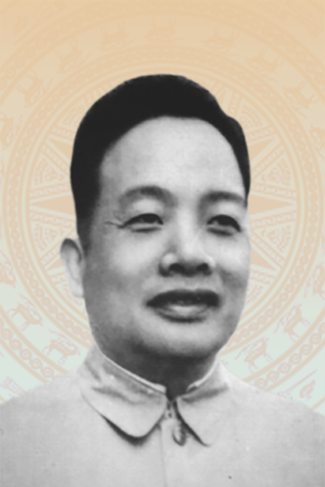
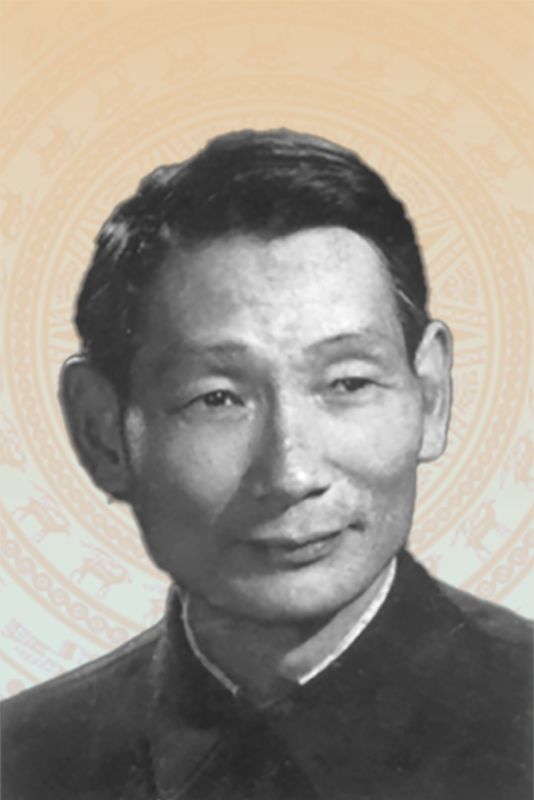
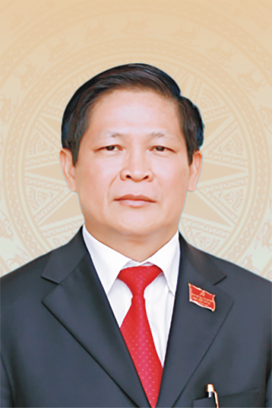
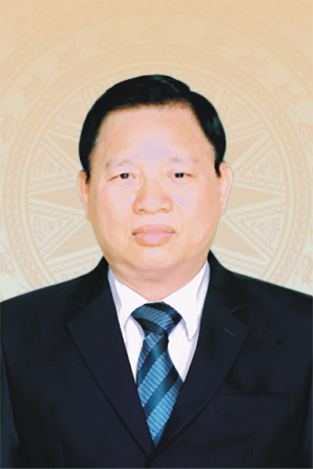

Đồng chí
Ngô Nhị Quý
Bí thư Tỉnh ủy lâm thời (từ 9/1945 - 8/1947)










| STT | Họ và tên | Chức vụ, đơn vị công tác |
|---|---|---|
| 1 | Trịnh Xuân Trường | Ủy viên Trung ương Đảng, Bí thư Tỉnh ủy |
| 2 | Vương Quốc Tuấn | Ủy viên Trung ương Đảng, Phó Bí thư Tỉnh ủy, Chủ tịch UBND tỉnh |
| 3 | Nguyễn Đăng Bình | Phó Bí thư Thường trực Tỉnh ủy Thái Nguyên |
| 4 | Đinh Quang Tuyên | Phó Bí thư Tỉnh ủy, Chủ tịch Ủy ban MTTQ tỉnh |
| 5 | Hoàng Thu Trang | Ủy viên Ban Thường vụ Tỉnh ủy, Chủ nhiệm Ủy ban Kiểm tra Tỉnh ủy |
| 6 | Dương Văn Tiến | Ủy viên Ban Thường vụ Tỉnh ủy, Trưởng Ban Tổ chức Tỉnh ủy |
| 7 | Lường Đức Thắng | Ủy viên Ban Thường vụ Tỉnh ủy, Trưởng Ban Nội chính Tỉnh ủy |
| 8 | Đỗ Thị Minh Hoa | Ủy viên Ban Thường vụ Tỉnh ủy, Trưởng Ban Tuyên giáo và Dân vận Tỉnh ủy |
| 9 | Đỗ Đức Công | Ủy viên Ban Thường vụ Tỉnh ủy, Phó Chủ tịch Thường trực HĐND tỉnh |
| 10 | Trần Thị Lộc | Ủy viên Ban Thường vụ Tỉnh ủy, Phó Chủ tịch HĐND tỉnh |
| 11 | Bùi Văn Lương | Phó Bí thư Tỉnh ủy, Chủ tịch HĐND tỉnh Thái Nguyên |
| 12 | Nguyễn Linh | Ủy viên Ban Thường vụ Tỉnh ủy, Phó Chủ tịch UBND tỉnh |
| 13 | Bùi Đức Hải | Ủy viên Ban Thường vụ Tỉnh ủy, Giám đốc Công an tỉnh |
| 14 | Vũ Duy Hoàng | Ủy viên Ban Thường vụ Tỉnh ủy, Phó Chủ tịch Thường trực Ủy ban MTTQ tỉnh |
| 15 | Phạm Văn Thọ | Ủy viên Ban Thường vụ Tỉnh ủy, Giám đốc Sở Công Thương |
| 16 | Nguyễn Thành Minh | Ủy viên Ban Thường vụ Tỉnh ủy, Chánh Văn phòng Tỉnh ủy |
| 17 | Ngô Tuấn Anh | Ủy viên Ban Thường vụ Tỉnh ủy, Chỉ huy trưởng Bộ CHQS tỉnh |
| 18 | Hà Sỹ Huân | Tỉnh ủy viên, Phó Trưởng Đoàn đại biểu Quốc hội khóa XV tỉnh Thái Nguyên |
| 19 | Mai Thị Thúy Nga | Tỉnh ủy viên, Phó Chủ tịch HĐND tỉnh |
| 20 | Đồng Văn Lưu | Tỉnh ủy viên, Phó Chủ tịch HĐND tỉnh |
| 21 | Nguyễn Thị Loan | Tỉnh ủy viên, Phó Chủ tịch UBND tỉnh |
| 22 | Nông Quang Nhất | Tỉnh ủy viên, Phó Chủ tịch UBND tỉnh |
| 23 | Phạm Việt Đức | Tỉnh ủy viên, Phó Trưởng Ban Thường trực Ban Tổ chức Tỉnh ủy |
| 24 | Bùi Thanh Hải | Tỉnh ủy viên, Phó Chủ nhiệm Thường trực Ủy ban Kiểm tra Tỉnh ủy |
| 25 | Vi Văn Nghĩa | Tỉnh ủy viên, Phó Chủ nhiệm Ủy ban Kiểm tra Tỉnh ủy |
| 26 | Nguyễn Minh Quang | Tỉnh ủy viên, Phó Trưởng Ban Tuyên giáo và Dân vận Tỉnh ủy |
| 27 | Ngô Thế Hoàn | Tỉnh ủy viên, Trưởng Ban Pháp chế, HĐND tỉnh |
| 28 | Phạm Thị Thu Thủy | Tỉnh ủy viên, Trưởng Ban Văn hóa - Xã hội, HĐND tỉnh |
| 29 | Hà Thị Đào | Tỉnh ủy viên, Phó Chủ tịch Ủy ban MTTQ tỉnh, Chủ tịch Hội Liên hiệp Phụ nữ tỉnh |
| 30 | Đỗ Thị Hiền | Tỉnh ủy viên, Phó Chủ tịch Ủy ban MTTQ tỉnh, Chủ tịch Liên đoàn Lao động tỉnh |
| 31 | Phan Thanh Hà | Tỉnh ủy viên, Phó Chủ tịch Ủy ban MTTQ tỉnh, Chủ tịch Hội Nông dân tỉnh |
| 32 | Dương Xuân Hùng | Tỉnh ủy viên, Giám đốc Sở Văn hóa, Thể thao và Du lịch |
| 33 | Nguyễn Thu Huyền | Tỉnh ủy viên, Hiệu trưởng Trường Chính trị tỉnh |
| 34 | Nguyễn Thị Vũ Anh | Tỉnh ủy viên, Tổng Biên tập Báo và Phát thanh, Truyền hình tỉnh |
| 35 | Nguyễn Quốc Hữu | Tỉnh ủy viên, Giám đốc Sở Nội vụ |
| 36 | Lê Kim Phúc | Tỉnh ủy viên, Giám đốc Sở Tài chính |
| 37 | Đặng Văn Huy | Tỉnh ủy viên, Giám đốc Sở Nông nghiệp và Môi trường |
| 38 | Nguyễn Ngọc Tuân | Tỉnh ủy viên, Giám đốc Sở Giáo dục và Đào tạo |
| 39 | Đặng Ngọc Huy | Tỉnh ủy viên, Giám đốc Sở Y tế |
| 40 | Dương Hữu Bường | Tỉnh ủy viên, Giám đốc Sở Khoa học và Công nghệ |
| 41 | Trần Văn Hậu | Tỉnh ủy viên, Chánh Thanh tra tỉnh |
| 42 | Trần Trọng Chung | Tỉnh ủy viên, Chánh Văn phòng UBND tỉnh |
| 43 | Vũ Đức Chính | Tỉnh ủy viên, Chánh Văn phòng Đoàn đại biểu Quốc hội và HĐND tỉnh |
| 44 | Hoàng Thanh Oai | Tỉnh ủy viên, Giám đốc Sở Dân tộc và Tôn giáo |
| 45 | Bùi Đức Thuận | Tỉnh ủy viên, Chánh án Tòa án nhân dân tỉnh |
| 46 | Vũ Thị Lệ Hằng | Tỉnh ủy viên, Giám đốc Sở Tư pháp |
| 47 | Hoàng Anh Trung | Tỉnh ủy viên, Phó Bí thư chuyên trách Đảng ủy Các cơ quan Đảng tỉnh |
| 48 | Nguyễn Bá Chính | Tỉnh ủy viên, Phó Giám đốc Sở Công Thương |
| 49 | Triệu Đức Văn | Tỉnh ủy viên, Phó Giám đốc Sở Nông nghiệp và Môi trường |
| 50 | Dương Văn Lượng | Tỉnh ủy viên, Bí thư Đảng ủy, Chủ tịch UBND phường Phan Đình Phùng |
| 51 | Hà Thị Bích Hồng | Tỉnh ủy viên, Bí thư Đảng ủy phường Linh Sơn |
| 52 | Hà Sỹ Thắng | Tỉnh ủy viên, Bí thư Đảng ủy xã Đại Từ |
| 53 | Hoàng Văn Thiên | Tỉnh ủy viên, Bí thư Đảng ủy phường Bắc Kạn |
| 54 | Nguyễn Đức Lực | Tỉnh ủy viên, Bí thư Đảng ủy phường Gia Sàng |
| 55 | Hoàng Văn Thiên | Tỉnh ủy viên, Bí thư Đảng ủy xã Vô Tranh |
| 56 | Hồ Thị Kim Ngân | Tỉnh ủy viên, Bí thư Đảng ủy phường Đức Xuân |
| 57 | Triệu Thị Thu Phương | Tỉnh ủy viên, Bí thư Đảng ủy xã Phủ Thông |
| 58 | Phạm Duy Hùng | Tỉnh ủy viên, Bí thư Đảng ủy phường Sông Công |
| 59 | Hà Văn Dương | Tỉnh ủy viên, Bí thư Đảng ủy xã Đồng Hỷ |
| 60 | Nông Bình Cương | Tỉnh ủy viên, Bí thư Đảng ủy xã Ngân Sơn |
| 61 | Dương Ngọc Thuyết | Tỉnh ủy viên, Bí thư Đảng ủy xã Chợ Rã |
| 62 | Nông Văn Nguyên | Tỉnh ủy viên, Bí thư Đảng ủy xã Na Rì |
| 63 | Ma Công Học | Tỉnh ủy viên, Chính ủy Bộ CHQS tỉnh |
| 64 | Nguyễn Thị Mai Lập | Tỉnh ủy viên, Viện trưởng Viện Kiểm sát nhân dân tỉnh |
| 65 | Phạm Quang Anh | Tỉnh ủy viên, Giám đốc Sở Xây dựng |
| 66 | Đoàn Quang Duy | Tỉnh ủy viên, Bí thư Đảng ủy xã Phú Lương |
| 67 | Phạm Thị Thu Hiền | Tỉnh ủy viên, Phó Chủ tịch Ủy ban MTTQ tỉnh, Bí thư Tỉnh đoàn |
| 68 | Nguyễn Nam Tiến | Tỉnh ủy viên, Bí thư Đảng ủy xã Đại Phúc |
| 69 | Triệu Tiến Trình | Tỉnh ủy viên, Bí thư Đảng ủy xã Chợ Mới |